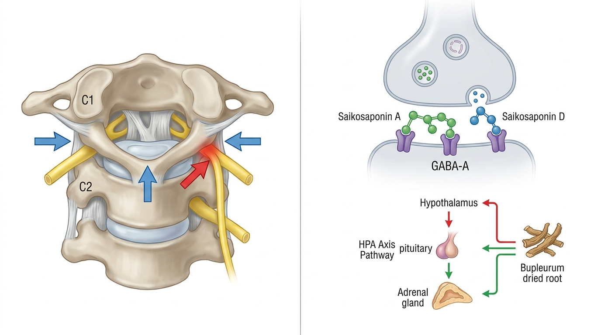

反复不明原因心悸与焦虑或源于寰枢关节错位导致的迷走神经功能紊乱
上颈段生物力学错位会对相邻的迷走神经及颅颈部神经血管结构产生机械性压迫，降低迷走神经张力并扰乱压力反射敏感性。这被解释为一种诱发交感神经系统过度亢奋的结构性病理机制，构成了反复心悸及易发惊恐发作的病理基础。
1. 上颈椎排列异常与自律神经功能紊乱、慢性失眠之间的神经生理学关联
枕骨下段与寰枢关节节段位于颅骨与颈椎相连的颅颈交界处，穿行于该区域的迷走神经与星状神经节构成了调节心率、呼吸及消化功能等自律神经的关键神经通路。当长期头部前倾姿势、反复颈椎前移及颈椎关节微观不稳定性累积发生时，寰枢关节节段的生物力学排列可能遭到破坏，导致相邻神经血管结构持续受到机械性压迫。这种结构性压迫会同时损害迷走神经的传出与传入信号传导，形成一种病理级联反应，导致心率变异性 (HRV) 指标下降、压力反射敏感性钝化以及慢性交感神经系统过度激活。临床上，尽管并无器质性心脏病理改变，但这种病理状态常表现为复杂的自律神经功能紊乱症状群——无明显心脏结构异常的反复性心悸、突发性焦虑发作、夜间觉醒频率增加以及慢性疲劳。值得注意的是，颅颈交界处的错位同样会影响脑干及小脑区域的微血管灌注，这可能成为削弱自律神经中枢调控能力的次要因素，因此凸显了对该病症采取结构性诊疗方法的重要性。
2. 星状神经节减压与大脑抑制性神经传导调节的整合治疗机制

为全面矫正引发心悸与惊恐障碍的自律神经病理，必须将解决周围结构性压迫的治疗方式与调节中枢神经化学失衡的治疗方式相辅相成地结合。生物力学空间脊柱减压推拿 (SART Protocol) 的设计原理在于对枕骨下段及寰枢关节节段施加精准的减压手法，缓解此前对迷走神经及相邻神经血管结构造成的机械性压迫，改善颅颈部微血管循环，从而促进迷走神经张力的正常化及压力反射敏感性的恢复。与此同时并用的hGMP标准体质定制中药——柴胡加龙骨牡蛎汤配方，其作用机制被理解为通过一种中枢调节机制：源自柴胡的柴胡皂苷A与D增强GABA-A受体介导的抑制性神经传导，龙骨与牡蛎的矿物质成分则协同这种镇静作用，从而缓解下丘脑-垂体-肾上腺 (HPA) 轴的过度激活。Bodyall韩医院在自律神经功能调节及慢性失眠诊疗中积累的丰富临床经验中观察到的缓解交感神经紧张及改善心率变异性 (HRV) 的临床趋势，与Giles等 (2013)的学术研究[1]在学术机理上呈现一致性，该研究证实了枕骨下段减压手法干预通过生物力学机制显著提升心脏自律神经调节指标。换言之，周围结构性减压必须首先恢复迷走神经信号传导通路，中枢作用类中药成分的生物利用度才能被优化，这为结构矫正与药理学干预的顺序整合提供了合理依据。
3. 关于寰枢关节生物力学错位所致迷走神经张力下降与心悸/惊恐障碍自律神经病理机制的学术临床论文分析
根据一项验证针对枕骨下段及寰枢关节区域进行减压手法干预对自律神经调节效果的研究，此类干预显著改善了健康受试者的心率变异性 (HRV) 指标，提示其增强了心脏自律神经调节功能[1]。这被解释为支持以下病理生理学假说的证据：上颈段生物力学错位会对相邻的颅颈部神经血管结构及迷走神经产生机械性压迫，从而降低迷走神经张力并扰乱压力反射敏感性。通过生物力学空间脊柱减压推拿 (SART Protocol) 恢复枕骨下段及上颈椎节段的排列，能够使迷走神经的周围信号传导通路及颅颈部微血管基础恢复正常，从而作为矫正慢性交感神经过度活跃及心悸惊恐易感性这一根本结构病因的机制基础。与此同时，一项分析柴胡加龙骨牡蛎汤在治疗多病共存症中增效减毒作用的系统评价与荟萃分析报告指出，这些效应被解释为源自柴胡的柴胡皂苷A与D，以及源自龙骨与牡蛎矿物质成分之间相互作用所致的药理学证据[2]。柴胡皂苷类成分被认为具有增强GABA-A受体介导的抑制性神经传导及抑制下丘脑-垂体-肾上腺 (HPA) 轴过度激活的中枢机制，从而缓解唾液皮质醇及儿茶酚胺的骤增；作为hGMP标准体质定制中药，这种神经药理学作用通过解决单纯结构性脊柱减压可能无法完全触及的持续性中枢过度唤醒及皮质醇调节异常问题，构成了自律神经失衡及心悸/惊恐症状综合治疗方案的药理学核心。综合两篇论文的机制分析，上颈段减压必须首先恢复迷走神经信号传导通路及颅颈部血管基础，柴胡皂苷介导的GABA能及HPA轴调节效果的中枢生物利用度才能得以优化，而中药的神经药理学作用则补充了单纯结构矫正无法触及的中枢过度唤醒及皮质醇调节异常问题——由此建立起两种方法在因果关系上相互补充的综合治疗理论依据。
4. Bodyall生物力学空间脊柱减压推拿 (SART Protocol) 与自律神经中药方案
Bodyall韩医院在自律神经系统调节异常这一单一病理框架内处理心悸与惊恐障碍，同时注意到其病因源于寰枢关节结构性压迫与中枢神经化学失衡这一双重轴心。因此，在通过精密触诊及影像学评估确认寰枢关节节段的排列状态及迷走神经张力后，通过生物力学空间脊柱减压推拿 (SART Protocol) 进行结构性干预，以缓解枕骨下段及寰枢关节区域的机械性压迫并改善颅颈部微血管循环。与此同时，结合考虑个体体质及自律神经反应模式配制的hGMP标准体质定制中药——柴胡加龙骨牡蛎汤处方，以强化GABA能抑制性神经传导并调节HPA轴过度激活——构建起一套结构减压与神经药理学调节相辅相成的综合治疗体系。下表总结了传统对症疗法与Bodyall韩医院综合治疗方案之间的机制差异。
| 分类 | 单纯促眠药/镇静剂 | 生物力学空间脊柱减压推拿 (SART Protocol) + hGMP标准体质定制中药 |
|---|---|---|
| 作用原理 | 对整体中枢神经系统活动进行非特异性抑制 | 通过上颈段结构减压恢复迷走神经张力，并选择性增强GABA能神经传导 |
| 作用部位 | 大脑广泛受体的广泛性抑制 | 寰枢关节节段及颅颈部神经血管结构、HPA轴及GABA-A受体 |
| 自律神经调节 | 以暂时性镇静效果为中心，根本性压力反射改善有限 | 以压力反射敏感性正常化及交感-副交感平衡恢复为导向 |
| 可持续性及方向 | 药效停止后症状易复发，以对症管理为中心 | 通过结构性病因矫正与中枢调节并行，以根本性改善为导向 |
这种综合治疗方法通过同时考量结构性病因与神经化学失衡，或可被评价为一种具备学术合理性、区别于局限于单一机制对症疗法的韩医保存治疗方案选择。
通过寰枢关节减压恢复迷走神经张力，在使周围信号传导通路正常化方面发挥着重要作用；然而，仅凭这一方法解决已呈慢性化的中枢HPA轴过度激活或皮质醇调节异常问题，可能存在局限性。因此，一种结合根据个体体质及症状模式定制的hGMP标准体质定制中药，共同促进结构性改善及中枢调节效果的方法，在学术上得到支持。
Bodyall韩医院首先通过精密触诊及影像学评估确认寰枢关节节段的排列状态及迷走神经张力，同时进行全面的临床问诊以评估个体的自律神经反应模式及体质特征，从而个别化设计结构性减压及中药处方应用的方向。
参考文献
- Giles, et al. (2013), 'Suboccipital Decompression Enhances Heart Rate Variability Indices of Cardiac Control in Healthy Subjects', The Journal of Alternative and Complementary Medicine. DOI: 10.1089/acm.2011.0031
- Jia, et al. (2023), 'Effect-enhancing and toxicity-reducing effects of Chaihu Jia Longgu Muli decoction in the treatment of multimorbidity with depression: a systematic review and meta-analysis', Pharmaceutical Biology. DOI: 10.1080/13880209.2023.2228356